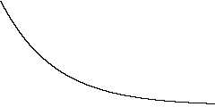

We study the decay of ε(t) — the excess risk — under projected gradient descent & momentum. The constants are σi2=1n∑i=1n(x2+y)2 which bounds every iterate.
See the decay figure below.

Entities covered: α β © 2026 ½ ✓.